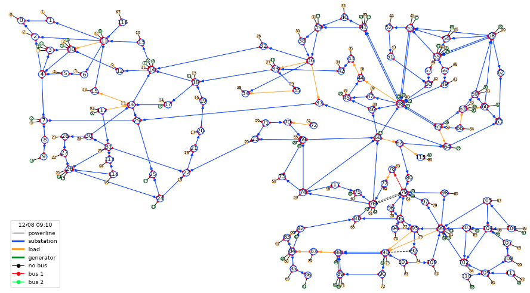
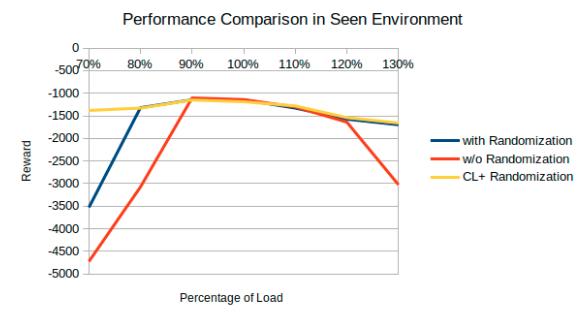
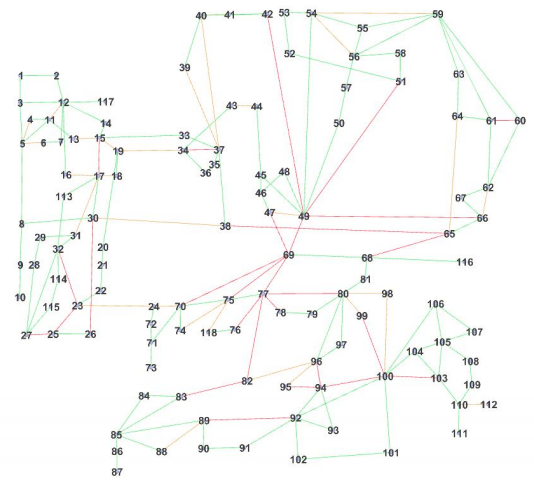
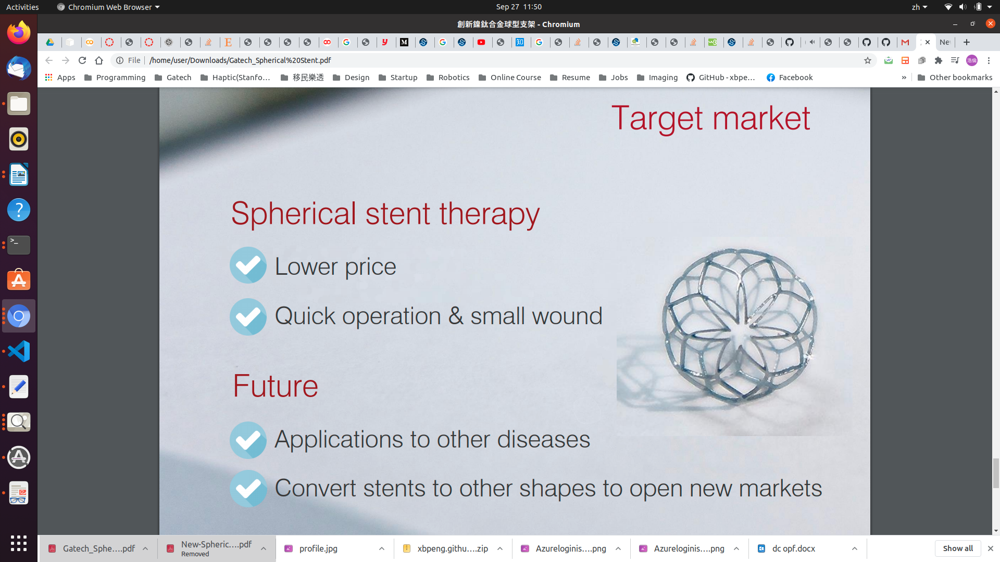
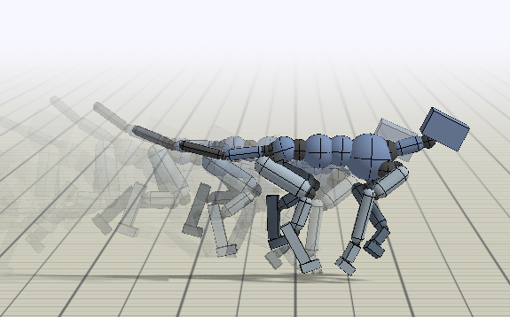
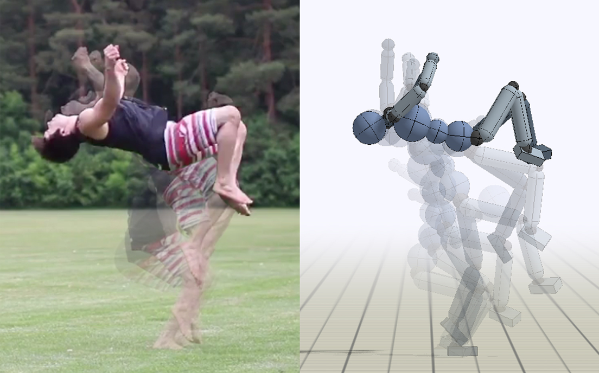
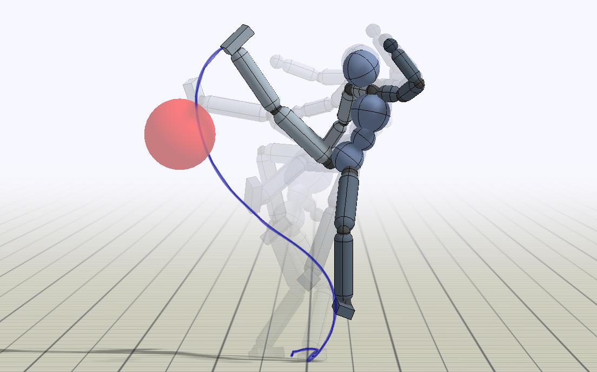
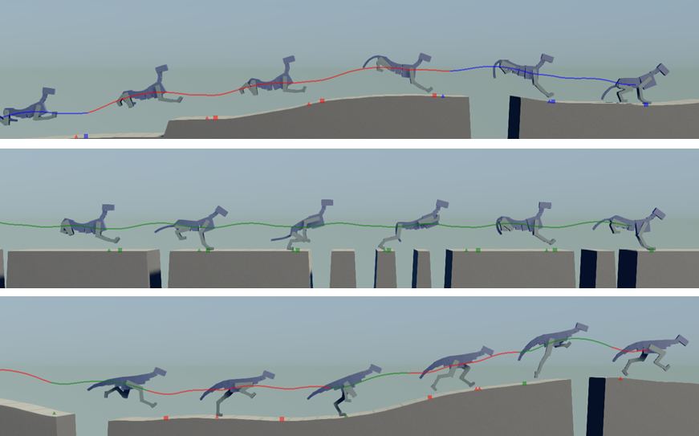

Yiren Ren, Hao-Lun Hsu
[Project page] [Paper]

Gayathri Krishnamoorthy, Ramij Raja Hossain, Hao-Lun Hsu, Stelios Stavroulakis, Qiuhua Huang, Sehoon Ha, Renke Huang
NeurIPS 2020 Competition Track (L2RPN 2020)
[Project page] [Paper]

Hao-Lun Hsu, Sehoon Ha
[Project page] [Paper]

Zhi Jin Zhang, Hao-Lun Hsu
[Project page] [Paper]

Jiong-Hong Chen, Hao-Lun Hsu, Wen-Hsin Yang, Yi-Chun Chen, Hao-Ming Hsiao
Annual Scientific Meeting of Taiwanese Society of Biomechanics (TSB 2017)
Best Paper Award
[Project page] [Paper]

Anirudh Goyal, Shagun Sodhani, Jonathan Binas, Xue Bin Peng, Sergey Levine, Yoshua Bengio
International Conference on Learning Representations (ICLR 2020)
[Project page] [Paper]

Aviral Kumar, Xue Bin Peng, Sergey Levine
arXiv Preprint 2019
[Project page] [Paper]

Farzad Adbolhosseini, Hung Yu Ling, Zhaoming Xie, Xue Bin Peng, Michiel van de Panne
ACM SIGGRAPH Conference on Motion, Interaction, and Games (MIG 2019)
[Project page] [Paper]

Xue Bin Peng, Aviral Kumar, Grace Zhang, Sergey Levine
arXiv Preprint 2019
[Project page] [Paper]

Xue Bin Peng, Michael Chang, Grace Zhang, Pieter Abbeel, Sergey Levine
Neural Information Processing Systems (NeurIPS 2019)
[Project page] [Paper]

Xue Bin Peng, Angjoo Kanazawa, Sam Toyer, Pieter Abbeel, Sergey Levine
International Conference on Learning Representations (ICLR 2019)
[Project page] [Paper]

Xue Bin Peng, Angjoo Kanazawa, Jitendra Malik, Pieter Abbeel, Sergey Levine
ACM Transactions on Graphics (Proc. SIGGRAPH Asia 2018)
[Project page] [Paper]

Xue Bin Peng, Pieter Abbeel, Sergey Levine, Michiel van de Panne
ACM Transactions on Graphics (Proc. SIGGRAPH 2018)
[Project page] [Paper]

Xue Bin Peng, Marcin Andrychowicz, Wojciech Zaremba, Pieter Abbeel
IEEE International Conference on Robotics and Automation (ICRA 2018)
[Project page] [Paper]

Xue Bin Peng, Glen Berseth, KangKang Yin, Michiel van de Panne
ACM Transactions on Graphics (Proc. SIGGRAPH 2017)
[Project page] [Paper]

Xue Bin Peng, Michiel van de Panne
ACM SIGGRAPH / Eurographics Symposium on Computer Animation 2017
Best Student Paper Award
[Project page] [Paper]

Xue Bin Peng, Glen Berseth, Michiel van de Panne
ACM Transactions on Graphics (Proc. SIGGRAPH 2016)
[Project page] [Paper]

Xue Bin Peng, Glen Berseth, Michiel van de Panne
ACM Transactions on Graphics (Proc. SIGGRAPH 2015)
[Project page] [Paper]